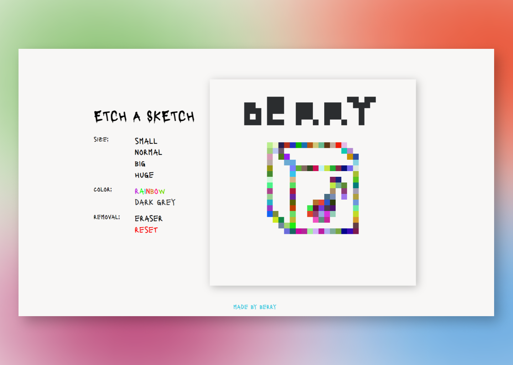
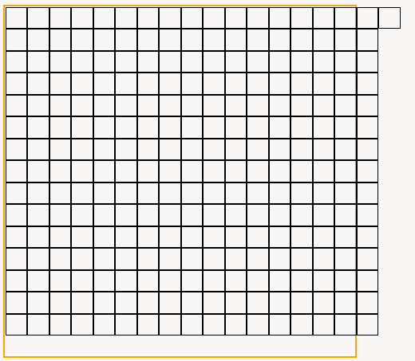
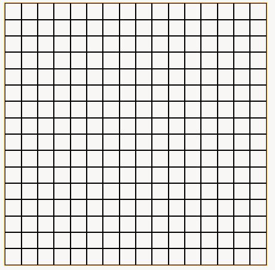

Draw whatever you want on your Minecraft-like sketchbook!
The goal was to create a basic "sketchbook" that operates like a mouse-controlled Etch-a-Sketch: hovering over and pressing a square would color it with a random or fixed color. Changing the size of given squares would reset any previous modifications.
This project is a slightly altered version of
The Odin Project's assignment, where the final result would be a bit less complex since it required just a hover effect present.
Originally, I assumed that I will tackle the squares' layout by using Flexbox. After lots of maneuvering this is the best I could achieve:
At this point, I knew that re-learning Grid, after years of not using it, will do the trick. And I was right.
